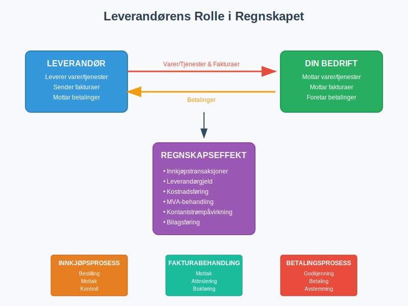
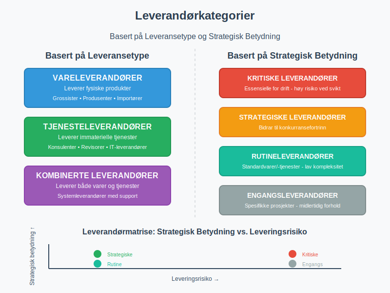
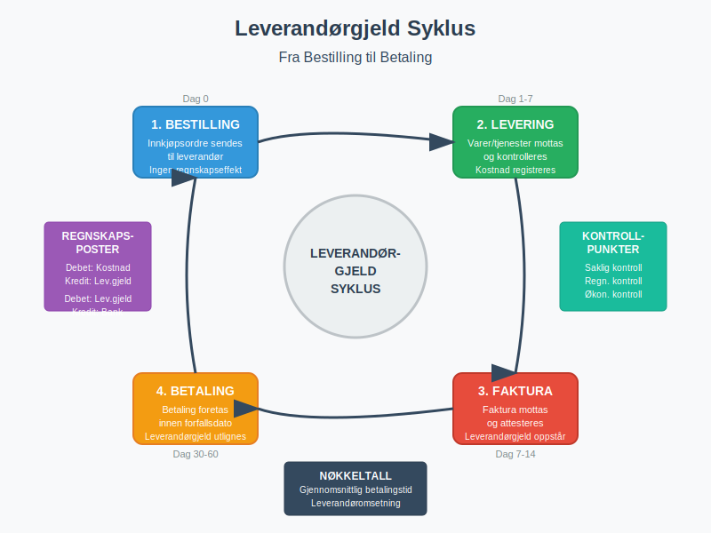
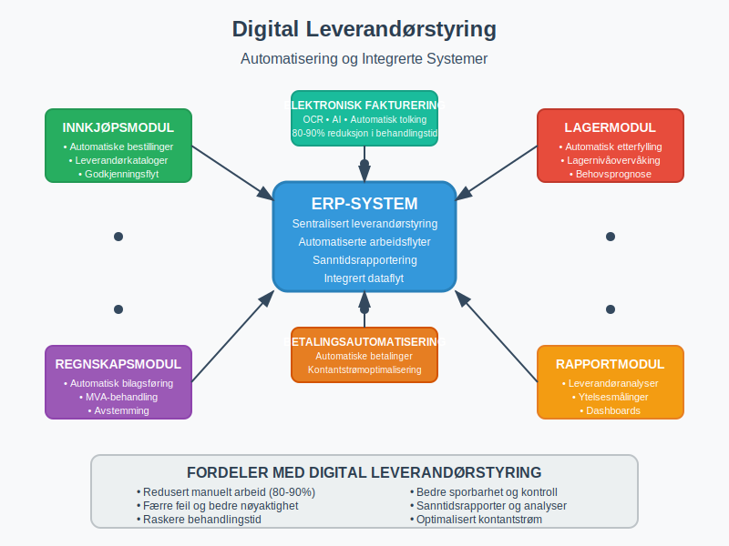

En leverandør er en person eller bedrift som leverer varer eller tjenester til din bedrift mot betaling. I regnskapssammenheng representerer leverandører en kritisk del av bedriftens kreditor-portefølje og påvirker direkte kontantstrømmen gjennom leverandørgjeld og betalingsforpliktelser. Effektiv leverandørstyring er fundamentalt for å opprettholde god betalingsevne og optimalisere bedriftens arbeidskapital.
Seksjon 1: Leverandørens Rolle i Regnskapet
Leverandører spiller en sentral rolle i bedriftens økonomiske økosystem og påvirker flere aspekter av regnskapsføringen. Når din bedrift mottar varer eller tjenester fra en leverandør, oppstår det en leverandørgjeld som må registreres korrekt i regnskapet.

Regnskapsmessig Behandling
Leverandørforhold genererer flere typer transaksjoner som må håndteres systematisk:
- Innkjøpstransaksjoner: Registrering av mottatte varer/tjenester
- Leverandørgjeld: Forpliktelser som oppstår ved kredittinnkjøp
- Betalinger: Utligning av leverandørgjeld
- Kreditnotaer: Korrigeringer og returvarer
Korrekt behandling av inngående fakturaer fra leverandører er essensielt for nøyaktig regnskapsføring og god internkontroll.
Seksjon 2: Typer Leverandører
Leverandører kan kategoriseres på flere måter avhengig av deres rolle og betydning for bedriften. Denne kategoriseringen hjelper med å prioritere leverandøroppfølging og risikostyring.

2.1 Basert på Leveransetype
| Leverandørtype | Beskrivelse | Eksempler |
|---|---|---|
| Vareleverandører | Leverer fysiske produkter | Grossister, produsenter, importører |
| Tjenesteleverandører | Leverer immaterielle tjenester | Konsulenter, revisorer, IT-leverandører |
| Kombinerte leverandører | Leverer både varer og tjenester | Systemleverandører med support |
2.2 Basert på Strategisk Betydning
- Kritiske leverandører: Leverandører som er essensielle for drift
- Strategiske leverandører: Leverandører som bidrar til konkurransefortrinn
- Rutineleverandører: Leverandører av standardvarer/-tjenester
- Engangsleverandører: Leverandører for spesifikke prosjekter
Strategisk viktige leverandører krever ofte spesiell oppfølging gjennom anskaffelsesprosesser og formelle avtaler.
Seksjon 3: Leverandørstyring og Oppfølging
Effektiv leverandørstyring innebærer systematisk oppfølging av leverandørforhold for å sikre optimal ytelse, kostnadseffektivitet og risikominimering.
Leverandørevaluering og Kvalifisering
Før en leverandør tas i bruk, bør følgende evalueringskriterier vurderes:
- Finansiell stabilitet: Leverandørens økonomiske soliditet
- Leveringskapasitet: Evne til å møte volum- og tidskrav
- Kvalitetsstandarder: Samsvar med bedriftens kvalitetskrav
- Compliance: Overholdelse av lover og regelverk
- Bærekraft: Miljømessige og sosiale standarder
Leverandøroppfølging
Kontinuerlig oppfølging av leverandører inkluderer:
- Ytelsesmåling: Regelmessig evaluering av leverandørens prestasjon
- Kontraktsoppfølging: Sikre at avtalevilkår overholdes
- Risikostyring: Identifisere og håndtere leverandørrisiko
- Relasjonsutvikling: Bygge langsiktige partnerskap
Seksjon 4: Leverandørgjeld og Betalingshåndtering
Leverandørgjeld representerer bedriftens kortsiktige forpliktelser til leverandører og er en viktig komponent i kortsiktig gjeld.
For systematisk oppfølging og håndtering av alle transaksjoner med leverandører, se vår guide til leverandørreskontro som forklarer hvordan du kan bruke underreskontro-systemet for effektiv kreditorhåndtering.

Betalingsbetingelser
Vanlige betalingsbetingelser fra leverandører inkluderer:
| Betalingsbetingelse | Beskrivelse | Fordeler for kjøper |
|---|---|---|
| Netto 30 dager | Betaling innen 30 dager | Standard kredittid |
| 2/10 netto 30 | 2% rabatt ved betaling innen 10 dager | Kontantrabatt |
| Forskuddsbetaling | Betaling før levering | Ofte bedre priser |
| Kontant ved levering | Betaling ved mottak | Ingen kredittrisiko |
Forskuddsbetaling kan være aktuelt for store bestillinger eller nye leverandørforhold.
Optimalisering av Betalinger
For å optimalisere kontantstrøm kan bedrifter:
- Utnytte kredittperioder: Betale på siste frist for å maksimere likviditet
- Forhandle betalingsbetingelser: Oppnå lengre kredittid
- Utnytte kontantrabatter: Betale tidlig for å oppnå rabatter
- Implementere avtalegiro: Automatisere rutinebetalinger
Seksjon 5: Leverandørregistrering og Dokumentasjon
Korrekt registrering og dokumentasjon av leverandørforhold er kritisk for god internkontroll og regnskapsføring.
Leverandørregister
Et komplett leverandørregister bør inneholde:
-
Grunnleggende informasjon:
- Leverandørnavn og organisasjonsnummer
- Kontaktinformasjon og adresse
- Bankkonto og IBAN-nummer
- MVA-registreringsstatus
-
Kommersielle vilkår:
- Betalingsbetingelser og kredittgrenser
- Prislister og rabattavtaler
- Leveringsbetingelser og frister
-
Juridiske aspekter:
- Kontraktuelle avtaler
- Forsikringsdekning
- Compliance-dokumentasjon
Dokumentasjonskrav
For hver leverandør må følgende dokumenteres:
- Leverandøravtaler: Formelle kontrakter og rammeavtaler
- Kvalifikasjonsdokumenter: Sertifiseringer og referanser
- Forsikringsdokumenter: Ansvarsforsikring og produktforsikring
- Compliance-dokumenter: Skatteregistrering og lovlighetserklæringer
Seksjon 6: Leverandørrisiko og Internkontroll
Leverandørforhold innebærer ulike risikoer som må identifiseres og håndteres systematisk.
Typer Leverandørrisiko
- Operasjonell risiko: Leveringssvikt eller kvalitetsproblemer
- Finansiell risiko: Leverandørens konkurs eller betalingsproblemer
- Compliance-risiko: Brudd på lover eller regelverk
- Reputasjonsrisiko: Leverandørens handlinger påvirker bedriftens omdømme
- Konsentrasjonsrisiko: Overdreven avhengighet av få leverandører
Internkontrolltiltak
Effektive internkontrolltiltak for leverandørstyring inkluderer:
- Segregering av oppgaver: Skille innkjøp, mottak og betaling
- Godkjenningsprosedyrer: Formelle prosesser for leverandørvalg
- Attestering av fakturaer: Kontroll før betaling
- Regelmessige leverandørgjennomganger: Periodisk evaluering
- Backup-leverandører: Alternative leveringskilder
Seksjon 7: Digitalisering av Leverandørstyring
Moderne teknologi har revolusjonert leverandørstyring gjennom automatisering og digitale løsninger.

Elektronisk Fakturabehandling
Elektronisk fakturering og fakturatolk-teknologi muliggjør:
- Automatisk fakturabehandling: Redusert manuelt arbeid
- Raskere behandlingstid: Fra dager til timer
- Færre feil: Eliminering av manuelle registreringsfeil
- Bedre sporbarhet: Digital dokumentasjon og arbeidsflyt
Integrerte Systemer
Moderne ERP-systemer integrerer leverandørstyring med:
- Innkjøpsmoduler: Automatiserte bestillingsprosesser
- Lagermoduler: Kobling til lagerbeholdning og etterfylling
- Regnskapsmoduler: Automatisk bilagsføring
- Rapporteringsmoduler: Sanntidsrapporter og analyser
Seksjon 8: Leverandøranalyse og Rapportering
Systematisk analyse av leverandørdata gir verdifull innsikt for strategiske beslutninger.
Nøkkeltall for Leverandøranalyse
| Nøkkeltall | Beregning | Betydning |
|---|---|---|
| Leverandørkonsentrasjon | Andel av totale innkjøp fra top 5 leverandører | Avhengighetsrisiko |
| Gjennomsnittlig betalingstid | Snitt dager fra fakturadato til betaling | Kontantstrømeffektivitet |
| Leverandøromsetning | Årlig innkjøpsvolum per leverandør | Forhandlingsmakt |
| Kvalitetsindeks | Andel feilfrie leveranser | Leverandørytelse |
Rapportering og Oppfølging
Regelmessig rapportering bør inkludere:
- Leverandørytelsesrapporter: Månedlig evaluering av nøkkelleverandører
- Innkjøpsanalyser: Kategorivisning av innkjøp og kostnadsutvikling
- Betalingsrapporter: Oversikt over forfallende betalinger
- Risikorapporter: Identifikasjon av høyrisiko-leverandører
Seksjon 9: Juridiske Aspekter ved Leverandørforhold
Leverandørforhold er regulert av ulike lover og regelverk som påvirker både kontraktuelle forhold og regnskapsføring.
Relevante Lovverk
- Kjøpsloven: Regulerer rettigheter og plikter ved kjøp av varer
- Bokføringsloven: Krav til dokumentasjon og registrering
- Merverdiavgiftsloven: Håndtering av MVA på innkjøp
- Anskaffelsesregelverket: For offentlige virksomheter
Kontraktuelle Forhold
Leverandørkontrakter bør regulere:
- Leveringsbetingelser: Tid, sted og kvalitetskrav
- Betalingsbetingelser: Frister og betalingsmetoder
- Ansvar og forsikring: Produktansvar og erstatning
- Force majeure: Håndtering av uforutsette hendelser
- Oppsigelse: Vilkår for kontraktsavslutning
Seksjon 10: Beste Praksis for Leverandørstyring
Implementering av beste praksis sikrer effektiv og risikominimerende leverandørstyring.
Strategiske Anbefalinger
- Utvikle leverandørstrategi: Definer mål og prioriteringer
- Implementer kategoristyring: Segmenter leverandører etter betydning
- Etabler klare prosesser: Standardiser arbeidsflyt og prosedyrer
- Invester i teknologi: Automatiser rutineoppgaver
- Bygg relasjoner: Fokuser på langsiktige partnerskap
Operasjonelle Anbefalinger
- Regelmessig leverandørevaluering: Kvartalsvise gjennomganger
- Kontinuerlig forbedring: Identifiser og implementer forbedringer
- Risikostyring: Proaktiv identifikasjon og håndtering av risiko
- Kompetanseutvikling: Sikre at personalet har nødvendig kunnskap
- Benchmarking: Sammenlign med bransjestandarder
Effektiv leverandørstyring krever en balansert tilnærming som kombinerer strategisk tenkning, operasjonell effektivitet og solid risikostyring. Ved å implementere systematiske prosesser og utnytte moderne teknologi kan bedrifter oppnå betydelige fordeler gjennom optimaliserte leverandørforhold.